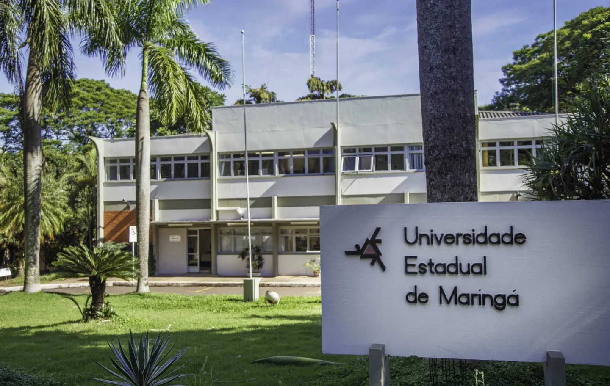

<div class="d-flex justify-content-center">
    <!-- text-justify, text-center, text-begin (a direita), text-end (a esquerda) -->
    <div class="text-justify col-md-12 row">

        <h4 class="page_title">
        <i class="fa fa-mobile-screen-button mx-1"></i>Curso de Especialização à Distância em  Desenvolvimento de Sistemas Web e Mobile (EspWebMob)
        </h4>

        <hr/>

        <div class="col-md-4" style="vertical-align:middle">
            
        </div>
        <div class="col-md-8">
            <p class="text-justify" >O curso de especialização em Desenvolvimento de Sistemas Web e Mobile é <b>100% Á DISTÂNCIA.</b></p>
            <p class="text-justify" >Atualmente o <acronym title="Departamento de Inform&aacute;tica">DIN</acronym> &eacute;   respons&aacute;vel por dois cursos de gradua&ccedil;&atilde;o da <acronym title="Universidade Estadual de Maring&aacute;">UEM</acronym>: Ci&ecirc;ncia da Computa&ccedil;&atilde;o   (integral) e Inform&aacute;tica (noturno), al&eacute;m da &ecirc;nfase de software do curso de Engenharia de Produ&ccedil;&atilde;o  (noturno).</p>
            <p class="text-justify" >O DIN tamb&eacute;m oferece  dois cursos de p&oacute;s-gradua&ccedil;&atilde;o: Especializa&ccedil;&atilde;o em   Desenvolvimento de Sistemas para Web e <a href="http://www.din.uem.br/mestrado" target="_blank">Mestrado em Ci&ecirc;ncia da Computa&ccedil;&atilde;o</a>. </p>
        </div>

        <br> <br> 
        <h4 class="page_title"> <i class="fa fa-history"></i> Histórico</h4>
        <hr/>
        <div class="col-md-8">
            <p class="text-justify" >Este curso teve início em 2002 com o título "Tecnologia em Desenvolvimento para Web" de forma presencial. Nesta turma houve 31 matriculados oriundos de diversas cidades do Paraná e sul de São Paulo. Destes, 19 concluiram monografia e obtiveram o certificado de conclusão do curso.</p>

            <p class="text-justify" >Em 2003 realizou-se uma reformulação pedagógica e definiu-se enfoque em desenvolvimento de sistemas de informação para Web. Efetuou-se melhorias nos laboratórios e implementou-se mais aulas práticas. Em agosto/2003 iniciou-se as aulas da segunda turma com 33 alunos matriculados vindos das cidades de Campo Grande, Campo Mourao, Castro, Goioere, Mandaguari, Maringá, Martinópolis, Palmitópolis, Presidente Prudente e Umuarama. Destes, 30 concluiram os créditos em disciplinas e atualmente estão desenvolvendo suas monografias, com previsão para término em abril/2005, para conclusão do curso.</p>
			
			<p class="text-justify" >Desde então, o curso teve 15 turmas, todas no formato presencial.</p>
			
			<p class="text-justify" ><b>Em 2023, o curso migrou para os moldes à distância (100% remoto), buscando ampliar a participação e a formação de mão de obra especilaizada para o Brasil e o exterior.</b></p>
        </div>
        <div class="col-md-4 text-end" style="vertical-align:middle">
            
        </div>

        <br><br>
        
		<h4 class="page_title"> <i class="fa fa-history"></i> Disciplinas do Curso</h4>
        <hr/>

        <p class="text-justify" >O curso é composto de <b>380 horas/aulas à distância</b> que abangem as seguintes disciplinas:</p>
		
		<ul>
			<li>Introdução ao Ensino à Distância - 30h</li>
			<li>Metodologia de Pesquisa em Computação - 40h</li>
			<li>Programação Orientada a Objetos - 30h</li>
			<li>Modelagem de Software - 20h</li>
			<li>Desenvolvimento Front-End com HTML e CSS - 60h</li>
			<li>Interação Humano-Computador e User eXperience - 20h</li>
			<li>Desenvolvimento para Dispositivos Móveis - 80h</li>
			<li>Desenvolvimento Front-End com Javascript e Frameworks - 50h</li>
			<li>Desenvolvimento Web Back-end - 50h</li>
		</ul>
		
		<br><br>
		
		<h4 class="page_title"> <i class="fa fa-history"></i> Corpo Docente do Curso</h4>
        <hr/>

        <p class="text-justify" >Os seguintes docentes compõem o curso:</p>
		
		<ul>
			<li><a href="http://lattes.cnpq.br/3927380939484195" target="_blank">Prof. Dr. Adriano Rivolli da Silva</a></li>
			<li><a href="http://lattes.cnpq.br/6628952189434232" target="_blank">Prof. Me. André Felipe Ribeiro Cordeiro</a></li>
			<li><a href="http://lattes.cnpq.br/2377044759133452" target="_blank">Prof. Dr. Dante Alves Medeiros Filho</a></li>
			<li><a href="http://lattes.cnpq.br/8717980588591239" target="_blank">Prof. Dr. Edson A. Oliveira Junior</a></li>
			<li><a href="http://lattes.cnpq.br/1509833195572488" target="_blank">Prof. Dr. Guilherme Corredato Guerino</a></li>
			<li><a href="http://lattes.cnpq.br/6396350779085620" target="_blank">Prof. Dr. Henrique Yoshikazu Shishido</a></li>
			<li><a href="http://lattes.cnpq.br/3603496659156120" target="_blank">Profa. Dra. Thelma Elita Colanzi Lopes</a></li>
			<li><a href="http://lattes.cnpq.br/6006297297239084" target="_blank">Prof. Me. Thiago Prado de Campos</a></li>
			<li><a href="http://lattes.cnpq.br/3068070863600193" target="_blank">Prof. Dr. Wagner Igarashi</a></li>
		</ul>
        
		<br><br>
		
		<h4 class="page_title"> <i class="fa fa-history"></i> Trabalho de Conclusão de Curso (TCC)</h4>
        <hr/>

        <p class="text-justify" ></p>
		
		
        
		
		
		
		<br><br>
		<p class="text-justify" >Venha fazer uma visita e conhecer nossa estrutura e a equipe EspWebMob.</p>
        <p class="text-justify"><span ><span class="style26"><strong>Universidade Estadual de Maring&aacute;</strong><br />
        <strong>Departamento de Inform&aacute;tica<br />
        Curso EspwebMob<br />
        </strong>Av. Colombo, 5790 - <acronym title="Universidade Estadual de Maring&aacute;">UEM</acronym> - Bloco C56 - <strong>CEP:</strong>&nbsp; 87020-900 <br />
        <strong>Tel.:</strong> (44)   		  3011-4324 / 3011-4219 - <strong>Fax.:</strong> (44) 3011-4074<br />
        <strong>E-mail.:</strong> espwebmob@gmail.com</span></span></p>
        <p class="text-justify" >&nbsp;</p>

        
    </div>
    
    

</div>
